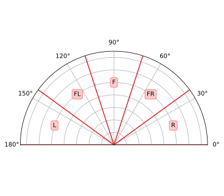

Clase 13 - Laboratorio
Simulación de sensores con Gazebo
Sensor de tipo IMU
Descripción del sensor
<gazebo reference="{nombre_link}">
<sensor name="{nombre_sensor}" type="imu">
<plugin
filename="gz-sim-imu-system"
name="gz::sim::systems::Imu">
</plugin>
<!-- Atributos -->
<update_rate>{freq_hz}</update_rate>
<topic>{nombre_topic}</topic>
<always_on>true</always_on>
<visualize>true</visualize>
</sensor>
</gazebo>Recuerda modificar el URDF para añadir el link y la joint correspondiente
<link name="{nombre_link}"> <xacro:dummy_inertial /> </link> <joint name="{nombre_joint}" type="fixed"> <parent link="base_link" /> <child link="{nombre_link}" /> <origin xyz="{x} {y} {z}" rpy="{r} {p} {y}" /> </joint>
Puedes crear un archivo aparte para separar los sensores del resto de la descripción, por ej. sensors.xacro
Modelo de ruido gaussiano
<noise type="gaussian">
<!-- Media -->
<mean>{media}</mean>
<!-- Desviación estándar -->
<stddev>{desviacion_estandar}</stddev>
</noise>Parámetros de ejemplo
Acelerómetro:
- Frecuencia de actualización: 100 [Hz]
- Ruido estándar: 0.0016 [m/s2] (X-Y), 0.0019 [m/s2] (Z)
- Bias: 0.020 [m/s2]
Giroscopo:
- Frecuencia de actualización: 100 [Hz]
- Ruido estándar: 0.00174533 [rad/s]
- Bias: 0.0174533 [rad/s]
<sensor name="imu" type="imu">
<plugin
filename="gz-sim-imu-system"
name="gz::sim::systems::Imu">
</plugin>
<always_on>1</always_on>
<update_rate>100</update_rate>
<topic>/imu/data</topic>
<visualize>true</visualize>
<imu>
<linear_acceleration>
<x>
<noise type="gaussian">
<mean>0.020</mean>
<stddev>0.0016</stddev>
</noise>
</x>
<!-- 'y' repite los parámetros de 'x' -->
<z>
<noise type="gaussian">
<mean>0.020</mean>
<stddev>0.0019</stddev>
</noise>
</z>
</linear_acceleration>
<angular_velocity>
<x>
<noise type="gaussian">
<mean>0.0174533</mean>
<stddev>0.00174533</stddev>
</noise>
</x>
<!-- 'y' y 'z' repiten los parámetros de 'x' -->
</angular_velocity>
</imu>
</sensor>Sensor de tipo LiDAR
Descripción del sensor
<gazebo reference="{nombre_link}">
<sensor name="{nombre_sensor}" type="gpu_lidar">
<update_rate>{freq_hz}</update_rate>
<topic>{nombre_topic}</topic>
<always_on>true</always_on>
<visualize>true</visualize>
<lidar>
<scan>
<horizontal>
<samples>{cantidad_rayos}</samples>
<resolution>1</resolution>
<min_angle>{min}</min_angle>
<max_angle>{max}</max_angle>
</horizontal>
<vertical>
<!-- Mismos parámetros que 'horizontal' -->
</vertical>
</scan>
<range>
<min>{rango_min}</min>
<max>{rango_max}</max>
<resolution>{res_lineal}</resolution>
</range>
</lidar>
</sensor>
</gazebo>Modelo de ruido gaussiano
<noise>
<type>gaussian</type>
<!-- Media -->
<mean>{media}</mean>
<!-- Desviación estándar -->
<stddev>{desviacion_estandar}</stddev>
</noise>Parámetros de ejemplo
- Rango de distancia: 0.05 - 15.0 [m]
- Frecuencia de escaneo: 10 [Hz]
- Resolución angular: 0.1125°
- Presición: ± 30 [mm]
- Resolución: 10 [mm]
<sensor name="lidar" type="gpu_lidar">
<always_on>true</always_on>
<update_rate>10</update_rate>
<topic>/scan</topic>
<visualize>true</visualize>
<lidar>
<scan>
<horizontal>
<samples>3200</samples>
<resolution>1</resolution>
<min_angle>${-pi}</min_angle>
<max_angle>${pi}</max_angle>
</horizontal>
<!-- Al ser 2D no tiene parámetros verticales -->
</scan>
<range>
<min>0.05</min>
<max>15</max>
<resolution>0.010</resolution>
</range>
<noise>
<type>gaussian</type>
<mean>0.0</mean>
<stddev>0.030</stddev>
</noise>
</lidar>
</sensor>Configuración del ros_gz_bridge
Recuerda crear la carpeta config, el archivo .yaml correspondiente y configurar correctamente el archivo setup.py
gz_bridge.yaml
Ejemplo con topic
cmd_veldesde interfaz de Gazebo
- topic_name: "/cmd_vel"
ros_type_name: "geometry_msgs/msg/Twist"
gz_type_name: "gz.msgs.Twist"
direction: GZ_TO_ROS
lazy: trueModificación del .launch.py
Cargar un archivo world en Gazebo
# ...
IncludeLaunchDescription(
PythonLaunchDescriptionSource(
PathJoinSubstitution(
[FindPackageShare('ros_gz_sim'), 'launch', 'gz_sim.launch.py']
),
),
launch_arguments={
'gz_args': [
TextSubstitution(text="-r"),
PathJoinSubstitution([
FindPackageShare("<nombre_paquete>"),
'worlds',
'<nombre_archivo>.world',
]),
]
}.items()
)
# ...Iniciar el
ros_gz_bridge
# ...
Node(
package="ros_gz_bridge",
executable="parameter_bridge",
parameters=[{
"config_file": PathJoinSubstitution(
[FindPackageShare("<nombre_paquete>"), "config", "gz_bridge.yaml"]
),
}],
)
# ...Detector de obstáculos con LiDAR
1. Modificar el
URDFdel robot para implementar un LiDAR simulado2. Crear un nodo que a partir de los datos del sensor detecte obstáculos dentro de 5 zonas particulares
Puede mostrar la distancia mínima para cada zona o si supera cierto umbral enviar un mensaje indicando que zona/s